바르셀로네타 · Port Vell · Sants 축제
시간대별 일정, 이동 정보, 지도와 관람 포인트를 확인하세요.
예상 도보92분
대중교통45분
택시·차량0분
일정 지점8곳
여행 전 확인: Sants 축제 공식 기간은 2026년 8월 22~30일. 세부 프로그램 공개 후 재확인.
도보Urgell Metro Barcelona → Sant Antoni Barcelona12분 · 경로 ↗ 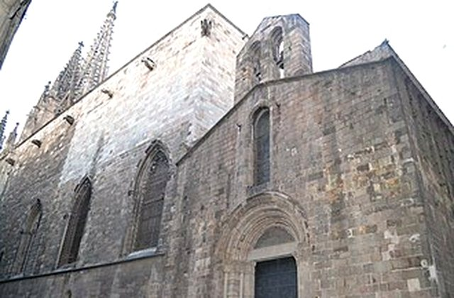
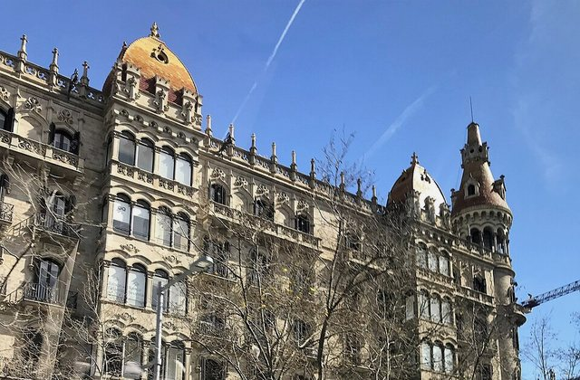
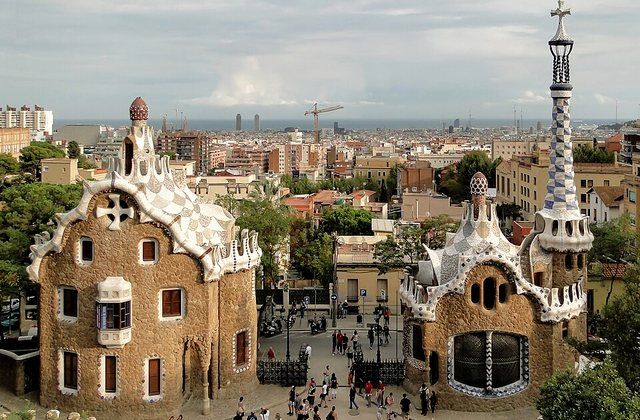
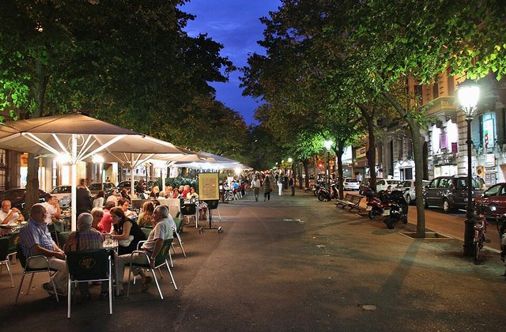
왜 중요한가Sant Antoni Brunch은(는) 오늘의 흐름에서 다음 장면으로 자연스럽게 이어지는 핵심 지점이다.
볼 포인트브런치. 대표 풍경과 공간의 분위기에 집중한다.
실전 팁혼잡하면 핵심을 보고 이동하고, 예약 장소는 15분 일찍 도착한다.
시간 관리표시된 이동시간에 환승·대기 10분을 더한다.
MetroSant Antoni Barcelona → Barceloneta Metro Station22분 · 경로 ↗ 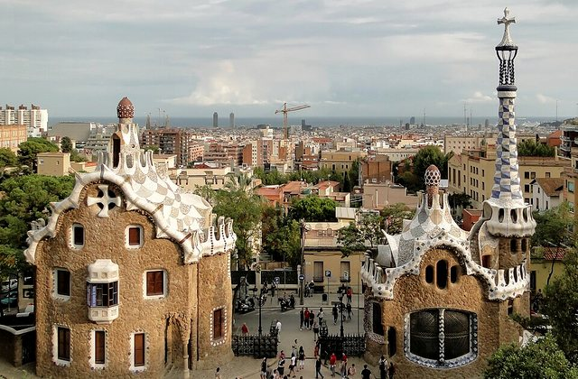
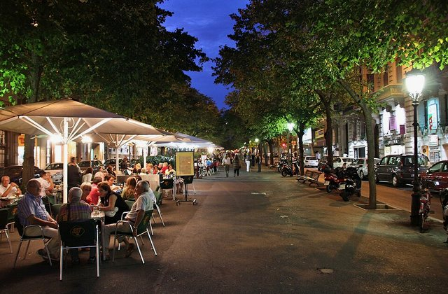
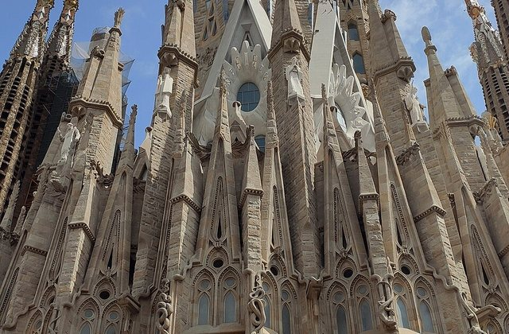
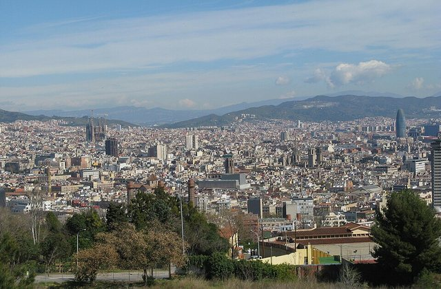
왜 중요한가Barceloneta은(는) 오늘의 흐름에서 다음 장면으로 자연스럽게 이어지는 핵심 지점이다.
볼 포인트해변 이동. 대표 풍경과 공간의 분위기에 집중한다.
실전 팁혼잡하면 핵심을 보고 이동하고, 예약 장소는 15분 일찍 도착한다.
시간 관리표시된 이동시간에 환승·대기 10분을 더한다.
도보Barceloneta Metro Station → Barceloneta Beach12분 · 경로 ↗ 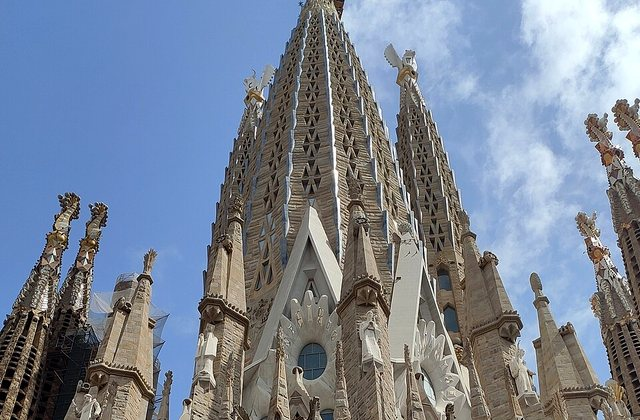
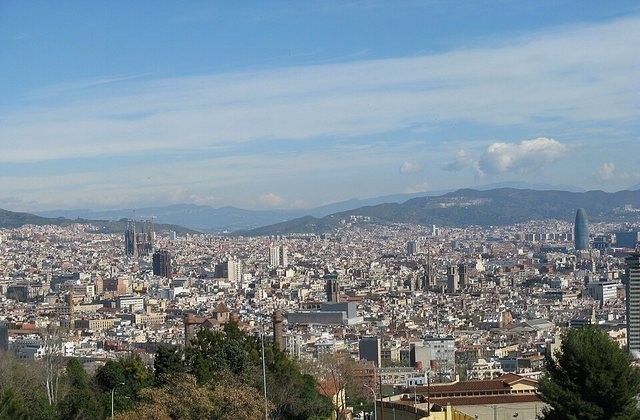
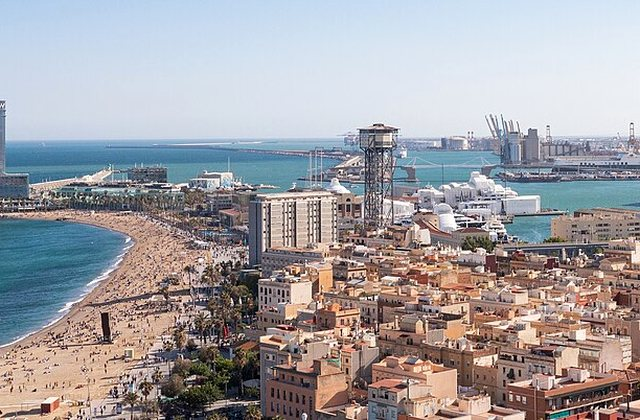
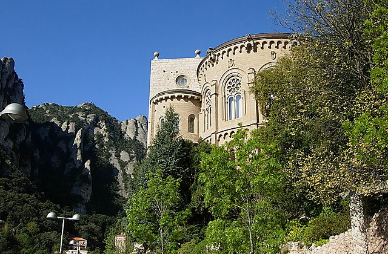
왜 중요한가Barceloneta Beach은(는) 오늘의 흐름에서 다음 장면으로 자연스럽게 이어지는 핵심 지점이다.
볼 포인트해변·선베드. 대표 풍경과 공간의 분위기에 집중한다.
실전 팁혼잡하면 핵심을 보고 이동하고, 예약 장소는 15분 일찍 도착한다.
시간 관리표시된 이동시간에 환승·대기 10분을 더한다.
도보Barceloneta Beach → Can Sole Barcelona10분 · 경로 ↗ 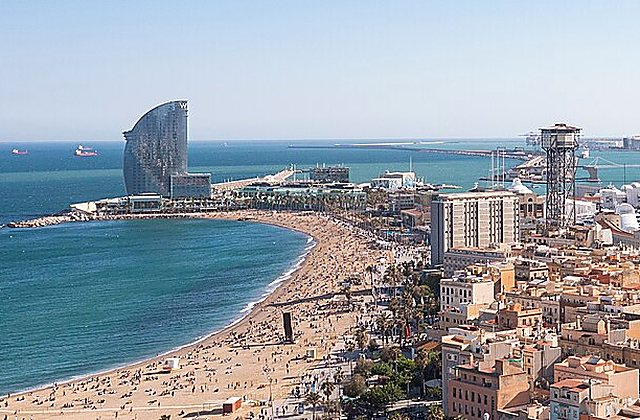
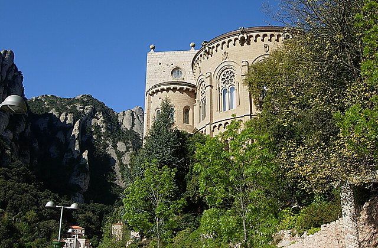
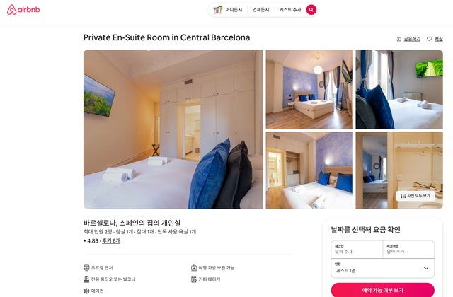
왜 중요한가Can Solé은(는) 오늘의 흐름에서 다음 장면으로 자연스럽게 이어지는 핵심 지점이다.
볼 포인트해산물·라이스 점심. 대표 풍경과 공간의 분위기에 집중한다.
실전 팁혼잡하면 핵심을 보고 이동하고, 예약 장소는 15분 일찍 도착한다.
시간 관리표시된 이동시간에 환승·대기 10분을 더한다.
도보Can Sole Barcelona → Port Vell Barcelona23분 · 경로 ↗ 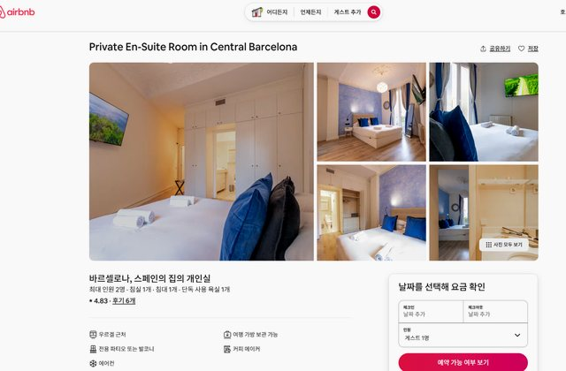
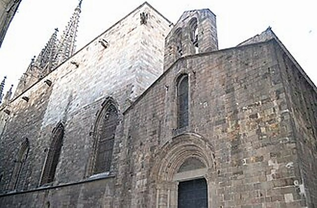
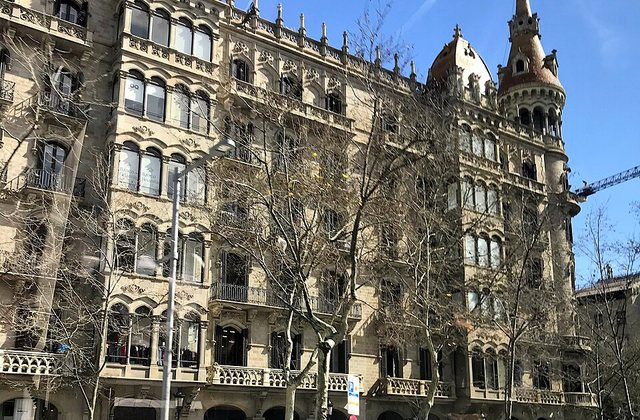
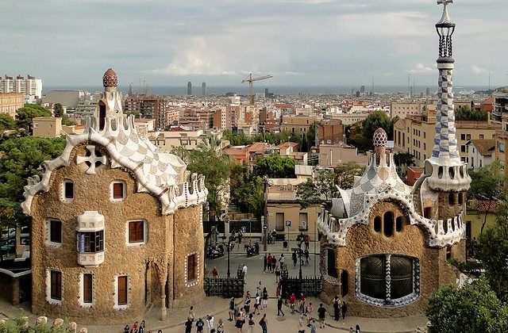
왜 중요한가Port Vell은(는) 오늘의 흐름에서 다음 장면으로 자연스럽게 이어지는 핵심 지점이다.
볼 포인트항구 산책. 대표 풍경과 공간의 분위기에 집중한다.
실전 팁혼잡하면 핵심을 보고 이동하고, 예약 장소는 15분 일찍 도착한다.
시간 관리표시된 이동시간에 환승·대기 10분을 더한다.
MetroPort Vell Barcelona → Urgell Metro Barcelona20분 · 경로 ↗
왜 중요한가숙소 휴식은(는) 오늘의 흐름에서 다음 장면으로 자연스럽게 이어지는 핵심 지점이다.
볼 포인트옷 갈아입기. 대표 풍경과 공간의 분위기에 집중한다.
실전 팁혼잡하면 핵심을 보고 이동하고, 예약 장소는 15분 일찍 도착한다.
시간 관리표시된 이동시간에 환승·대기 10분을 더한다.
MetroUrgell Metro Barcelona → Festa Major de Sants Barcelona18분 · 경로 ↗ Festa Major de Sants
장식 거리·무료 공연
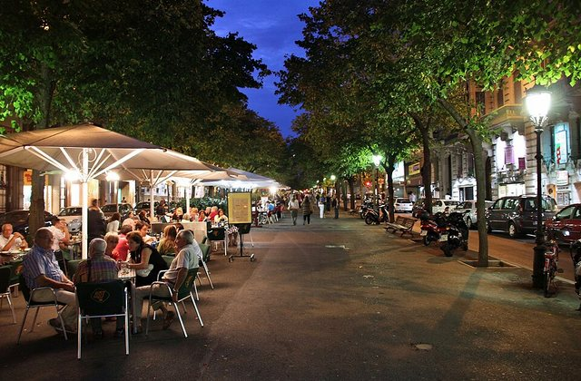

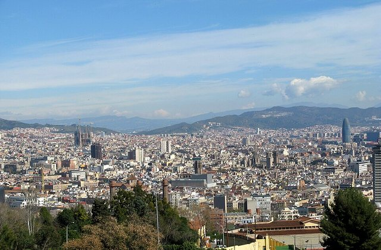
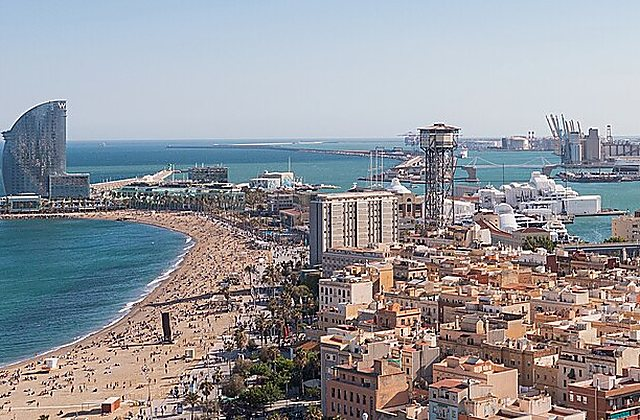
왜 중요한가Festa Major de Sants은(는) 오늘의 흐름에서 다음 장면으로 자연스럽게 이어지는 핵심 지점이다.
볼 포인트장식 거리·무료 공연. 대표 풍경과 공간의 분위기에 집중한다.
실전 팁혼잡하면 핵심을 보고 이동하고, 예약 장소는 15분 일찍 도착한다.
시간 관리표시된 이동시간에 환승·대기 10분을 더한다.
MetroFesta Major de Sants Barcelona → Urgell Metro Barcelona18분 · 경로 ↗ 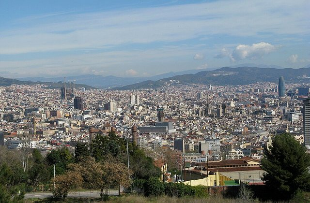
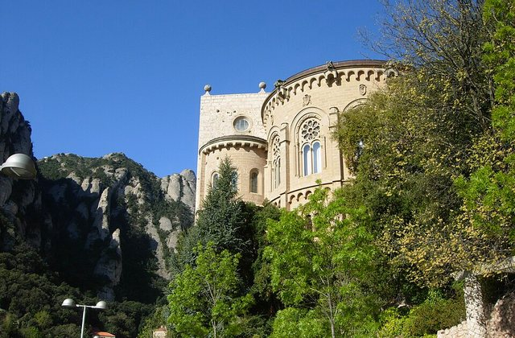
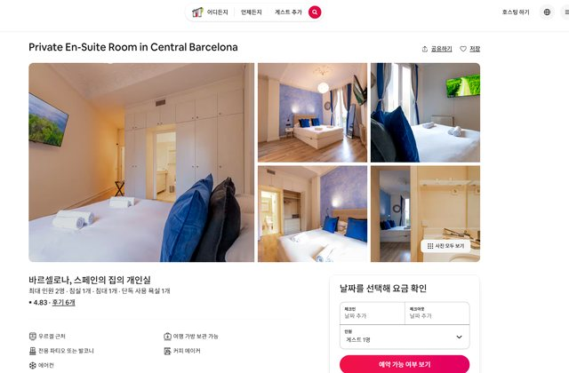
왜 중요한가숙소 복귀은(는) 오늘의 흐름에서 다음 장면으로 자연스럽게 이어지는 핵심 지점이다.
볼 포인트일정 종료. 대표 풍경과 공간의 분위기에 집중한다.
실전 팁혼잡하면 핵심을 보고 이동하고, 예약 장소는 15분 일찍 도착한다.
시간 관리표시된 이동시간에 환승·대기 10분을 더한다.